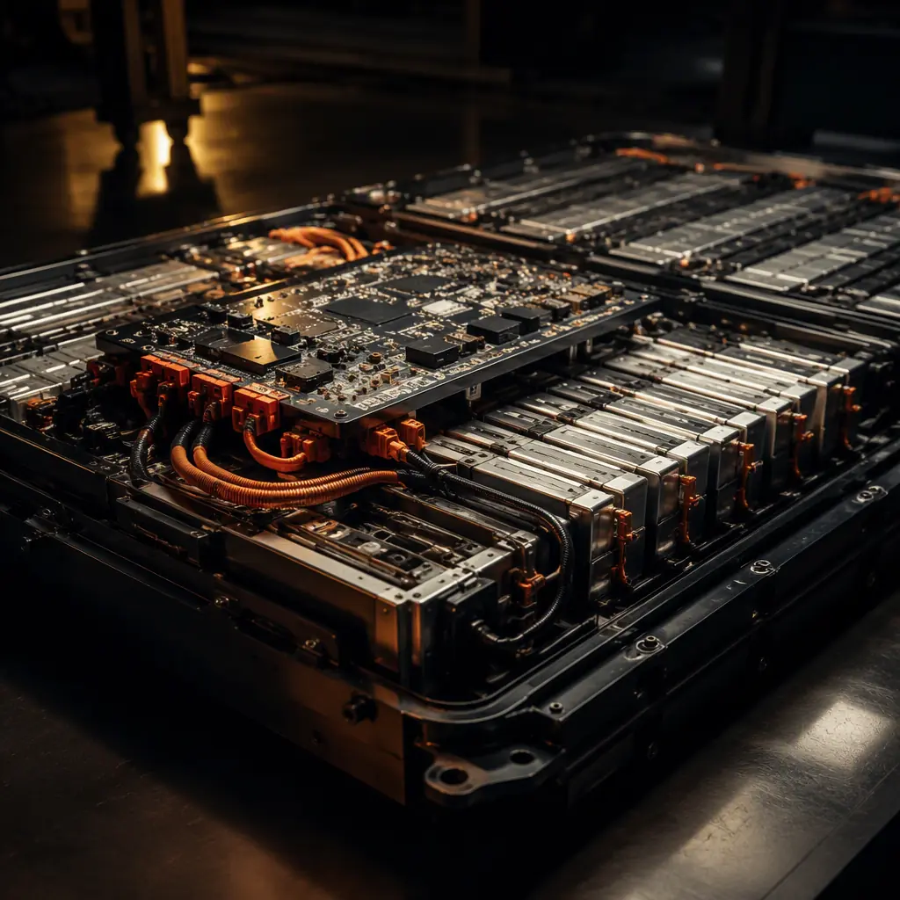
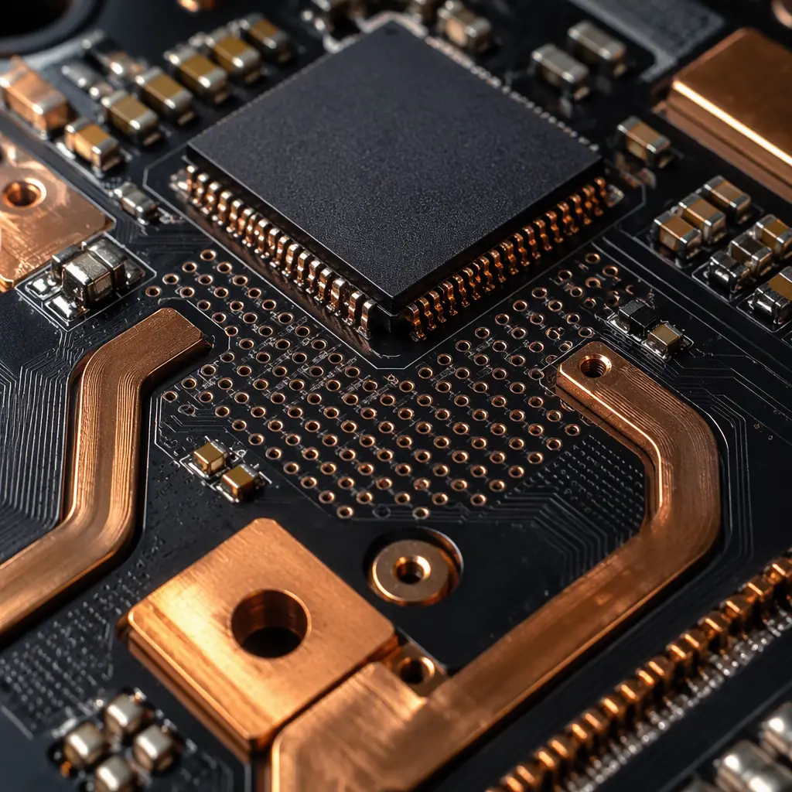

The battery management system is the most safety-critical PCB inside any electric vehicle. A BMS board sits directly on top of high-voltage lithium-ion cells — monitoring individual cell voltages with millivolt precision, balancing charge across hundreds of cells, and executing emergency disconnect within microseconds of detecting a fault. For procurement managers and hardware engineers sourcing BMS PCBs, the manufacturing requirements are unlike any other automotive board: you need high-voltage isolation up to 5kV, functional safety compliance to ISO 26262 ASIL-C/D, and thermal management that keeps precision analog front-end ICs stable across a –40°C to +125°C operating range.
At Huaxing PCBA, we manufacture BMS controller and cell monitoring unit (CMU) PCBs for 400V and 800V EV platforms at our IATF 16949 certified facility. Our production line handles up to 12 layers with controlled impedance, 3.2mm thick copper (4 oz) for high-current bus bars, and automated optical inspection (AOI) with 100% flying probe testing on every BMS PCB. Here is what you need to know before placing your next BMS PCB order.

BMS PCB Architecture: CMU, BMU, and the Isolation Challenge
A modern EV battery pack uses a distributed BMS architecture — cell monitoring units (CMUs) sit directly on cell groups inside the pack, connected via isolated CAN or daisy-chain SPI to a central battery management unit (BMU). Each board tier has distinct PCB manufacturing requirements:
Cell Monitoring Unit (CMU) PCB — Precision Analog Front-End
The CMU PCB mounts directly on battery modules, measuring 6–16 cell voltages with ±1.5 mV accuracy using dedicated AFE ICs (TI BQ series, ADI LTC68xx, NXP MC33771). These boards require 4-layer minimum stackup with a solid ground plane beneath the AFE to isolate analog traces from digital noise. Creepage distance between cell inputs must exceed 4.0mm for 400V systems and 8.0mm for 800V systems per IEC 60664-1. Temperature sensing NTC thermistors require dedicated Kelvin-connected traces to avoid IR drop errors. Our impedance control guide covers the trace geometry precision needed for these sensitive measurements.
Battery Management Unit (BMU) — Central Processing & Safety Logic
The BMU aggregates data from all CMUs, runs state-of-charge (SOC) and state-of-health (SOH) algorithms, and controls contactors. It typically uses a 6–8 layer HDI PCB with a 32-bit automotive MCU, isolated CAN FD transceivers, and redundant power supplies. The PCB must maintain galvanic isolation between the high-voltage domain (connected to battery pack) and the low-voltage domain (12V vehicle bus) — typically 2.5–5 kV isolation through isolated DC-DC converters and digital isolators with 8mm+ creepage slots milled into the PCB. See our automotive PCB requirements guide for the full reliability framework.
Shunt-Based vs Hall-Effect Current Sensing
BMS current measurement for SOC coulomb counting uses either a precision shunt resistor (100 µΩ to 500 µΩ) with a dedicated 16–24 bit ADC, or a Hall-effect sensor with integrated magnetic concentrator. Shunt-based sensing demands PCB trace resistance as low as 0.5 mΩ between the shunt and ADC — achieved with 4 oz copper pours and Kelvin (4-wire) connection routing. Hall-effect sensing simplifies PCB layout but adds ±1% accuracy error over temperature. Most ASIL-C/D designs use redundant shunts with cross-checked measurements. For heavy-copper PCB requirements, refer to our heavy copper PCB guide.
Procurement Insight: BMS PCBs that combine CMU and BMU functions on a single board (integrated BMS) trade isolation simplicity for higher layer count and tighter creepage constraints. Expect 8–12 layers with multiple milled isolation slots. Unit cost is 40–60% higher than distributed architecture boards, but system-level integration and harness elimination often offset this in pack-level BOM cost.
ISO 26262 Functional Safety: What It Means for Your BMS PCB
ISO 26262 is not a PCB manufacturing standard — it is a functional safety lifecycle standard. But the PCB is where the safety architecture is physically implemented, and your PCB supplier's process capability directly determines whether the safety goals can be met. Here is what ASIL-C and ASIL-D BMS designs demand from PCB manufacturing:
| Requirement | ASIL-B (Mild Hybrid) | ASIL-C (PHEV/400V) | ASIL-D (BEV/800V) |
|---|---|---|---|
| PCB Layer Count | 4–6 layers | 6–8 layers | 8–12 layers |
| Creepage (HV to LV) | 3.2 mm | 6.4 mm | 8.0 mm |
| Copper Weight (power plane) | 2 oz | 3–4 oz | 4–6 oz |
| Isolation Voltage | 1.5 kV | 2.5 kV | 5.0 kV |
| CTI Rating (base material) | PLC 3 (≥175V) | PLC 2 (≥250V) | PLC 0 (≥600V) |
| IPC Class | Class 2 | Class 3 | Class 3 + AABUS |
| Conformal Coating | Optional | Required | Required + IP67 |
| Testing | 100% AOI + FP | + 4-wire Kelvin | + HiPot + Partial Discharge |
For ASIL-D specifically, the PCB supplier must provide PPAP Level 3 documentation including material certs, process capability data (Cpk ≥ 1.67 for critical dimensions), and first-article inspection reports. The PCB base material must have a Comparative Tracking Index (CTI) of PLC 0 (≥600V) — typically achieved with high-Tg FR-4 (Tg > 170°C) or polyimide laminates. Our certifications and compliance guide details the full documentation package.
Key Takeaway: The difference between an ASIL-B and ASIL-D BMS PCB is not just spec margins — it is the process evidence behind every board. ASIL-D requires statistical process control data, 100% automated optical inspection with defect classification, and traceability to the panel and material lot for every shipped PCB. Factor this into supplier selection: a shop that does Class 2 consumer boards cannot simply "tighten tolerances" for ASIL-D without a completely different quality infrastructure.
800V Architecture: Creepage, Clearance, and Partial Discharge Risks
The shift from 400V to 800V battery architecture (driven by Porsche Taycan, Hyundai E-GMP, and Lucid Air platforms) doubles the electrical stress on BMS PCBs. It is not just about wider spacing — 800V introduces partial discharge (PD) as a new failure mechanism that 400V designs never had to consider:
Creepage Extensions Must Be Structural, Not Just Spacing
Per IEC 60664-1, pollution degree 2 environments at 800V DC require 8.0mm minimum creepage between high-voltage nets and grounded copper or low-voltage circuits. This cannot be achieved with spacing alone on a densely populated BMS board — it requires milled isolation slots (1.0–1.5mm wide, routed through all layers) that physically interrupt the creepage path. At Huaxing PCBA, we CNC-route isolation slots with ±0.1mm positional accuracy and verify slot continuity with automated optical inspection on every board.
Partial Discharge Testing Becomes Mandatory Above 500V
Partial discharge is a localized dielectric breakdown in voids, delamination, or sharp copper edges within the PCB that does not immediately short the board but erodes insulation over months of operation. 800V BMS PCBs must pass partial discharge testing per IEC 60270 with ≤10 pC apparent charge at 1.2× operating voltage. This requires void-free lamination, smooth copper etching (no jagged trace edges), and post-etch cleaning to remove ionic residues. Our manufacturing process includes automated PD testing on 100% of 800V BMS PCBs before shipment. For more on high-voltage PCB reliability, see our ionic contamination testing guide.
Thicker Base Material — CTI and Thermal Performance Trade-offs
800V designs typically push PCB thickness to 2.0–3.2mm to accommodate copper weights up to 6 oz and maintain mechanical rigidity through thermal cycling. The challenge: thicker laminates have higher thermal resistance, trapping heat from shunt resistors and AFE ICs. This is solved with thermal via arrays (0.3mm diameter, 1.0mm pitch) under hot components, connecting to a dedicated thermal plane on an inner layer. Our MCPCB and thermal substrate guide covers alternative substrates when FR-4 thermal performance is insufficient.

Cell Balancing: Passive vs Active — PCB Design Impact
Cell balancing equalizes voltage across series-connected cells to prevent overcharge and maximize usable capacity. The two approaches — passive (resistive bleed) and active (charge redistribution) — create very different PCB requirements:
| Parameter | Passive Balancing | Active Balancing |
|---|---|---|
| PCB Thermal Load | High — 100–300 mA bleed per cell; 2–6W total heat per CMU | Low — 1–5A transfer current at >90% efficiency |
| Copper Requirements | 2 oz minimum for bleed resistor thermal pads; thermal vias under resistors | 3–4 oz for high-current transfer paths between cells |
| Component Count | 1 bleed resistor + 1 MOSFET per cell | 1 inductor/transformer + 2 MOSFETs per cell pair |
| PCB Area per Channel | ~200 mm² | ~600 mm² |
| BOM Cost Impact | +$0.15/channel | +$1.20/channel |
Passive balancing is simpler but turns the CMU PCB into a distributed heater — 96-cell packs dissipate up to 30W through bleed resistors during balancing. This demands thermal pad copper pours under every bleed resistor with thermal vias to an inner ground plane acting as a heat spreader. Active balancing avoids this thermal load but adds inductor/transformer magnetics that require keepout zones around switching nodes to prevent EMI coupling into the AFE's analog front-end. Read our thermal management guide for detailed design strategies.
BMS Communication Buses: Isolated CAN vs Daisy-Chain SPI
BMS boards communicate across a high-voltage isolation barrier using either isolated CAN FD or transformer-isolated daisy-chain SPI. Both approaches have PCB layout implications that directly impact signal integrity and safety compliance:
Isolated CAN FD uses digital isolators (TI ISO1042, ADI ADM3055E) with integrated DC-DC converters to bridge the HV-LV boundary. The PCB must maintain the isolation barrier by placing the isolator component straddling a milled slot, with the HV-side copper on one side and LV-side on the other — no copper bridging the gap on any layer. CAN bus termination resistors (120Ω) must be placed within 10mm of the transceiver to avoid stub reflections.
Daisy-chain SPI (ADI isoSPI, TI differential-SPI) uses transformer coupling through tiny pulse transformers (e.g., Würth 749014011) that provide inherent isolation. The advantage: a single twisted-pair carries both data and power, reducing harness weight. The PCB challenge: the transformer's center-tap requires careful ground referencing to prevent common-mode voltage drift across the daisy chain. For high-speed digital PCB design requirements including controlled impedance routing, our impedance control guide covers the necessary trace geometry.
Procurement Checklist for BMS PCB Buyers
Verify ISO 26262 Process Capability — Not Just ISO 9001
A PCB supplier holding ISO 9001 is not evidence of functional safety capability. Request IATF 16949 certification as the minimum automotive quality baseline. For ASIL-C/D BMS boards, request evidence of process capability studies (Cpk data) for controlled impedance traces, minimum annular ring, and isolation slot width — these are the dimensions that directly affect safety goal integrity. Our certifications guide explains what each standard actually means for PCB manufacturing.
Define CTI and HiPot Requirements in the Fabrication Drawing
Specify the required Comparative Tracking Index (CTI) per IEC 60112 — PLC 0 (≥600V) for 800V systems — in the PCB fabrication notes, not just the electrical schematic. Request HiPot test reports showing leakage current < 1 mA at 1.5× rated isolation voltage for 60 seconds. For 800V ASIL-D designs, add partial discharge testing with acceptance criteria ≤10 pC. If your supplier cannot provide PD test data, they are not qualified for 800V BMS manufacturing.
Demand 4-Wire Kelvin Testing on All Shunt Sense Traces
Standard flying probe continuity testing cannot verify the milli-ohm level trace resistances that shunt-based current sensing depends on. Specify 4-wire Kelvin resistance measurement on all shunt sense traces, with acceptance limits per the nominal trace resistance ±10%. A 0.5 mΩ trace that measures 0.75 mΩ due to poor plating will create a 50% SOC calculation error in coulomb counting. Our facility performs this on 100% of BMS PCBs as standard.
Specify Conformal Coating Type and Coverage
BMS PCBs operate in condensing humidity environments inside the battery pack enclosure. Conformal coating is mandatory — specify acrylic (AR) or silicone (SR) coating at 50–75µm thickness per IPC-CC-830, with masked keepout zones on connectors, test points, and pressure-relief vents. Polyurethane (UR) offers better chemical resistance for packs that may see electrolyte leakage. Our conformal coating guide compares the options in detail.
Include Thermal Cycling Validation in PPAP
BMS PCBs see extreme thermal gradients: the AFE ICs run at +85°C while adjacent cell terminals are at –20°C during cold-start charging. Request thermal cycling test data: 1,000 cycles –40°C to +125°C per AEC-Q100 Grade 1, with 4-wire resistance measurement before and after cycling to detect plating fatigue and barrel cracking. Acceptable resistance change: ≤10%. See our microsection interpretation guide for how to read cross-section reports that reveal these defects.
Summary: BMS PCB Manufacturing Is a Safety-Critical Supply Chain Decision
The BMS PCB is where the electrical and functional safety of the entire battery pack converges onto a single board. The manufacturing requirements — milled isolation slots, partial discharge testing, 4-wire Kelvin measurement, CTI-rated base materials, and PPAP documentation — are fundamentally different from general automotive PCBs. This is not a board where you can compromise on supplier capability to save 15–20% on unit cost.
At Huaxing PCBA, we manufacture BMS CMU and BMU PCBs for 400V and 800V platforms at our IATF 16949 certified Shenzhen facility. Our BMS production line includes 100% HiPot testing to 6kV, partial discharge screening, 4-wire Kelvin resistance measurement, and full PPAP Level 3 documentation. We support 4–12 layer PCBs with up to 6 oz copper, milled isolation slots, and controlled impedance. Read our automotive PCB requirements guide for the full quality framework, or contact our engineering team with your BMS PCB specifications for a DFM review within 24 hours.